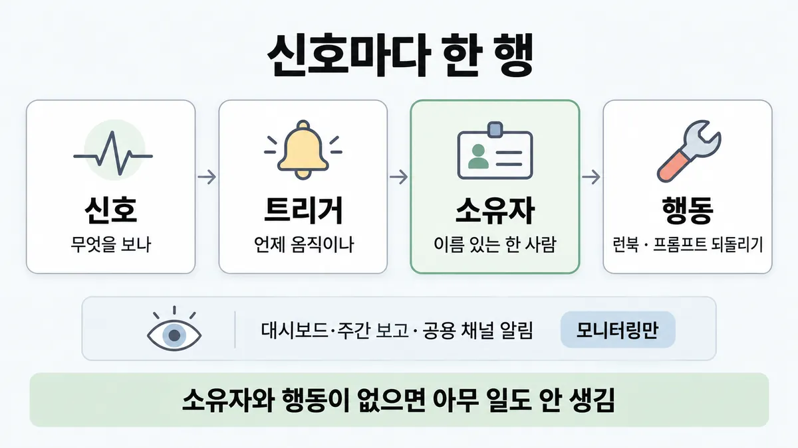
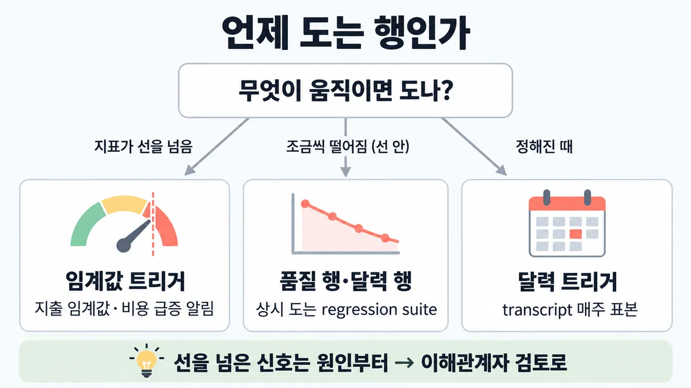

■ feedback loop 책임 표
표시가 없는 문장은 공식 문서에서 확인한 내용이에요. 다른 표시는 읽는 법
왜 배우나 — 시험이 요구하는 것
시험 목표 6.3 피드백과 기대 맞추기 · D6 사람·문서 14%Manage stakeholder feedback loops and expectation alignment (including SLAs)
이 개념으로 푸는 판단 (할 수 있어야 하는 것)
- 6.3② 월간 검토에서 법무팀이 놓친 조항 사례를 들고 왔다 — 이 피드백을 어디로 보내나? — 피드백 루프를 닫는 방법 (상태 보고 회의 vs 평가셋 편입)
- 6.5① 핸드오프가 끝났다 — 아키텍트가 계속 할 일 두 가지는? (복수 응답) — 수명주기 5단계(디스커버리·설계·핸드오프·모니터링·반복)는 되돌아오는 루프 — 핸드오프 뒤 할 일
한눈에
운영 중 신호마다 한 행 = 신호(무엇을 보나) → 트리거(언제 움직이나) → 이름 있는 소유자(누가) → 반드시 하는 행동(런북 실행 · 프롬프트 되돌리기 · 이해관계자 검토). 대시보드 · 주간 품질 보고 · 공용 채널 알림은 모니터링만 — 소유자와 행동이 없으면 아무 일도 안 생김 업계 일반 표 구조는 Anthropic 문서 없음
공식에서 가장 가까운 것 : eval 셋은 명확한 소유권이 있어야 쓸모 · 알림은 내 관측 백엔드의 몫 · 정기 작업엔 성공이 무엇인지와 결과로 무엇을 할지를 적음 (셋 다 좁은 문맥 — 루프 표로 넓힌 건 해석)
기술 루프(실패 → eval 과제 → CI)는 ■ 운영 → eval feedback loop, 핸드오프 뒤 두 가지 일은 ■ lifecycle 루프. 여기는 사람 쪽 feedback loop(되먹임) — 누가 무엇에 반응하고 언제 이해관계자(stakeholder)에게 올리나
비유 온콜 에스컬레이션 정책 — 알림마다 받는 사람 · 응답 없으면 다음 사람 · 런북 링크. 공용 채널에만 쏘는 알림은 아무도 안 받는 알림


ELI5
집에 화재경보기가 있어도, 울릴 때 누가 무엇을 할지 안 정하면 소용없어요.
- 경보마다 "누가 나가서 무엇을 한다" 를 정해 둬요.
- 연기가 아주 조금씩 나면 경보가 안 울려요. 그래서 매주 한 번 집을 둘러보는 날도 정해요.
- 불이 크면 혼자 끄지 말고 어른에게 알려요.
- 이 쪽은 "누가, 언제, 무엇을" 을 표 한 장에 적는 법이에요.
개념 설명
원리
보여 주기 ≠ 루프
- 대시보드 · 주간 품질 보고 · 공용 채널 알림 = 보여 주기(모니터링)만. 루프 = 신호 → 트리거 → 이름 있는 소유자 → 반드시 하는 행동 (표 구조는 업계 일반).
- 공식이 모니터링을 두고 하는 말 : 사후 대응(문제가 사용자에게 먼저 닿음) · 신호가 시끄러움 → 누군가 걸러 행동으로 바꿔야 의미가 생김.
- 공식의 소유권 문장은 eval 셋에 있음 ("clear ownership"). 표의 모든 행으로 넓힌 건 해석.
- Claude Code 텔레메트리도 원시 이벤트만 내보내고 알림·기준선은 내 SIEM·observability(관측) 백엔드 몫 (공식) → 알림을 만들고 받는 사람을 정하는 건 늘 내 쪽 일.
트리거 세 종류
- 임계값 : 선을 넘으면 — 지출 임계값 알림 · 비용 급증 알림 (공식 장치).
- 품질 상시 : 통과율 높은 과제를 regression suite 로 계속 돌려 drift 를 잡음 (공식).
- 달력 : 지표와 상관없이 정해진 때 — 매주 transcript 표본 · 사람 정기 검토로 보정 (공식) · 규제 정기 감사 · 마일스톤 시연 (업계 일반).
넘으면 이해관계자 검토로 올리는 선
- 미리 합의한 선(비용 한도 · 합격 기준 · 규제 점검) = 팀 혼자 정해도 되는 범위의 경계. 넘으면 이해관계자(stakeholder) 검토.
- 원인 먼저(정당한 성장인가 · 버그인가) → trade-off(절충)를 들고 감. 예산 재설정은 스폰서 (전부 업계 일반).
핵심 질문 두 개
- 이 신호가 울리면 누가, 무엇을 하나 — 사람 이름과 동작으로 답할 수 있나?
- 이 신호가 선을 넘으면 팀이 정하나, 이해관계자가 정하나?
규칙과 판단


갈림길
①⑤ 루프인가 [6.3②]
소유자·행동부터
대시보드 · 주간 품질 보고 · 공용 채널 알림은 모니터링만 — 소유자와 행동이 없으면 아무 일도 안 생김 업계 일반 · eval 셋도 명확한 소유권이 있어야 쓸모
행동을 적음
런북 실행 · 프롬프트 되돌리기 · 이해관계자 검토처럼 반드시 하는 행동 업계 일반
다음 물음 — 무엇이 움직이면 도나?
②③ 언제 도나 [6.3②] [6.5①]
임계값 트리거
지출 임계값 알림 · 비용 급증 알림
품질 행 · 달력 행
통과율 높은 capability eval 은 regression suite 로 졸업해 계속 돌며 drift 를 잡음 → 표의 품질 행 = 상시 도는 regression suite (해석) · 품질 트리거는 출시 전에 표에 업계 일반 · 지표가 선을 안 넘어도 정해진 때 도는 행이 서서히 떨어지는 품질을 잡음 업계 일반
달력 트리거
피드백은 계속 분류 · transcript 는 매주 표본 · 사람 정기 검토로 보정
④ 누가 정하나 [6.3①] [6.3②]
팀 안에서
선 안의 작은 흔들림은 팀이 처리하고 기록 업계 일반
원인부터
정당한 성장인가 · 버그인가부터 밝힘 → ■ 비용 급증 추적 업계 일반
이해관계자 검토로
팀 안에서 조용히 고치지 않고 trade-off 를 들고 감 · 예산 재설정은 스폰서 결정 업계 일반 → ■ trade-off 전달
흐름
그림 속 이름·금액·시간·토큰 수는 예시예요. 공식 한도·동작은 카드 본문 값이 기준.
장면 글로 보기
칸 : 신호 → 트리거 → 소유자 → 행동
규칙 (소유자) : 이름 있는 한 사람
질문 : 이 신호가 뜨면 누가 움직일까?
① 소유자 있는 행 ✓
- 시작 : 신호 — 쪽지 : 환불 문의 / 사람 이관률 / 12% → 21%
- 발동 : 신호 → 트리거 : 선을 넘음 — 쪽지 : 선: 18% 초과 / 이틀 연속
- 받음 : 트리거 → 소유자 : 이름 있는 소유자 — 쪽지 : 지원 품질 리드 / 당일 확인
- 실행 : 소유자 → 행동 : 반드시 하는 행동 — 쪽지 : 런북 R-4 / transcript 30건 / 원인 기록
- 끝 : 신호 → 트리거 → 소유자 → 행동이 한 행에
② 공용 채널 알림만 ≠
- 시작 : 신호 — 쪽지 : 환불 문의 / 사람 이관률 / 12% → 21%
- 발동 : 신호 → 트리거 : 공용 채널에 뜸 — 쪽지 : #cs-alerts / 3주째 매일
- 건너뜀 : 소유자
- 멈춤 : 트리거 → 행동 : 소유자 없는 알림 ≠ — 쪽지 : 조치 0건 / 3주째 21%
- 끝 : 소유자와 행동이 없으면 아무 일도 안 생김
③ 서서히 떨어짐 → 달력 행 ✓
- 시작 : 신호 — 쪽지 : 정답률 / 88 → 87 → 86% / 알림 선 80%
- 조용함 : 트리거 : 선 안이라 알림은 안 울림 — 쪽지 : 알림 0건
- 타이머 : 트리거 : 매주 월요일 transcript 표본
- 발동 : 트리거 → 소유자 : 달력 트리거 — 쪽지 : 매주 표본 30개 / 3주째 하락
- 실행 : 소유자 → 행동 : 반복인지 재설계인지 진단 — 쪽지 : 주제별 쪼개기 / 트레이스 확인
- 끝 : 지표가 선을 안 넘어도 정해진 때 도는 행이 서서히 떨어지는 품질을 잡음
규칙 원문 ①②③④⑤ (갈림길로 그린 규칙)
-
한 행 = 신호 → 트리거 → 이름 있는 소유자 → 반드시 하는 행동 업계 일반 [6.3②]
신호 트리거 소유자 행동 환불 문의 사람 이관률 18% 초과 이틀 연속 지원 품질 리드 런북 · transcript 표본 읽고 원인 기록 월 API 지출 지출 임계값 알림 플랫폼 리드 원인 추적 → 합의한 선을 넘으면 스폰서 검토 regression suite 정답률 배포마다 · 매일 eval 셋 소유자 떨어진 과제 확인 → 프롬프트 되돌리기 transcript 표본 매주 월요일 지원 품질 리드 30개 읽고 새 실패는 eval 과제로 (표 값은 예시 — 업계 일반)
대시보드 · 주간 품질 보고 · 위험 메모 · 공용 채널 알림은 모니터링만 — 소유자와 행동이 없으면 아무 일도 안 생김. 원인은 라우팅·모델이 아니라 비어 있는 책임 업계 일반
소유자 = 이름 있는 한 사람 · 행동 = "살펴본다" 가 아니라 런북 실행 · 프롬프트 되돌리기 · 이해관계자 검토처럼 반드시 하는 행동 업계 일반
공식 조각 : eval 셋 = 계속 손보고 명확한 소유권이 있어야 쓸모 · Claude Code 는 원시 이벤트만 내보내고 이상 탐지·기준선·알림은 내 SIEM·observability(관측) 백엔드 몫 · 정기 작업 프롬프트엔 성공이 무엇인지와 결과로 무엇을 할지를 분명히 (좁은 문맥 — 루프 표로 넓힌 건 해석) → ■ observability 세 신호
-
품질 행은 출시 전에 : 임계값 알림만으로는 서서히 떨어지는 품질을 못 잡음(어느 알림도 안 넘음) → 품질 트리거는 출시 전에 표에, 소유자·행동과 함께 업계 일반 [6.3②] [6.5①]
공식 : 운영 모니터링은 사후 대응 — 문제가 사용자에게 먼저 닿음 · 신호가 시끄러움 · 통과율 높은 capability eval 은 regression suite 로 졸업해 계속 돌며 drift 를 잡음 → 표의 품질 행 = 상시 도는 regression suite (해석) → ■ 검증 층
출시 뒤에 쓰는 표는 막았어야 할 사고 뒤에 써짐 업계 일반
떨어졌을 때 무엇부터(트레이스 · 주제별 쪼개기 · 반복 vs 재설계)는 ■ lifecycle 루프
-
달력 트리거 = 지표가 선을 안 넘어도 정해진 때 도는 행 [6.3②] [6.5①]
공식 : 피드백은 계속 분류 · transcript 는 매주 표본으로 읽고 필요하면 더 깊이 · 가장 잘하는 팀 = 자동 eval + 운영 모니터링 + 사람 정기 검토(보정) · Claude Code 정기 작업 예 = 매일 아침 PR 검토 · 매주 의존성 감사 · 밤새 CI 실패 확인
규제 배포의 정기 출력 감사 · 마일스톤마다 합의한 합격 기준에 대고 실제 동작 시연도 달력 행 — 긴 상태 보고나 불만 폭발을 기다리지 않음 업계 일반
지표가 선을 안 넘어도 정해진 때 도는 행이 서서히 떨어지는 품질을 잡음 업계 일반
-
넘으면 이해관계자 검토로 올리는 선 : 미리 합의한 선(비용 한도 · 합격 기준 · 규제 점검)을 넘은 신호는 팀 안에서 조용히 고치지 않고 이해관계자 검토로. 정당한 성장인가 · 버그인가부터 밝히고 trade-off 를 들고 감 업계 일반 [6.3①] [6.3②]
예산 재설정 · 범위 변경은 스폰서 결정 업계 일반 → 선택지 표 만드는 법 = ■ trade-off 전달
선 안의 작은 흔들림은 팀이 처리하고 기록 업계 일반
비용 행의 공식 장치 : 지출 임계값 알림 · 비용 급증 알림 (Claude Code) · 워크스페이스 지출 한도 = 마지막 안전판(backstop) → 알림이 먼저, 한도는 멈추는 장치 (순서는 해석) · 원인 좁히기 = ■ 비용 급증 추적
SLA 위반이면 무엇이 따르나(구제 · 축소 운영 · 통보 대상)는 조항에 미리 → ■ SLA 조항 쓰기
-
사람 피드백(override · 반려 · 불만)도 한 행 : 소유자가 분류 → 진짜 실패는 eval 과제로. 과정 본문 = ■ 운영 → eval feedback loop [6.3②]
더 깊이 : 판단 규칙 · 상황 변수 (설명)
판단 규칙
| 조건 | 답 | 등급 | 근거 |
|---|---|---|---|
| 대시보드·주간 보고는 있는데 소유자·행동이 없음 | 모니터링만 → 소유자·행동부터 채움 | 업계 일반 (공식 조각 확인) | demystifying-evals "clear ownership" (eval 셋 문맥) |
| 알림은 공용 채널에만 뜸 | 소유자 없는 알림 → 받는 사람 1명 + 행동 | 업계 일반 | — |
| 알림·기준선을 누가 만드나 (Claude Code) | 내 SIEM·관측 백엔드 | monitoring-usage | |
| 정기 작업(스케줄)의 지시 | 성공이 무엇인지 + 결과로 무엇을 할지 | claude-code-common-workflows (Claude Code 스케줄 문맥) | |
| 품질이 선 안에서 조금씩 떨어짐 | regression suite 상시 + 달력 행 | (regression suite · 매주 표본) · 업계 일반(표의 행) | demystifying-evals |
| 품질 트리거를 언제 적나 | 출시 전 | 업계 일반 | 출시 뒤 표는 사고 뒤에 써짐 |
| 지표와 상관없이 정기 확인 | 달력 트리거 : 매주 transcript 표본 · 사람 정기 보정 | demystifying-evals | |
| 비용 신호 | 지출 임계값 알림 · 비용 급증 알림, 지출 한도는 마지막 안전판 | usage-cost-api · monitoring-usage · optimizing-cost-intelligence | |
| 합의한 선을 넘음 | 원인부터 → 이해관계자 검토, 예산 재설정은 스폰서 | 업계 일반 | — |
| 선 안의 흔들림 | 팀이 처리하고 기록 | 업계 일반 | — |
| 사람 피드백(override · 불만) | 분류 → 진짜 실패는 eval 과제로 | ■ 운영 → eval feedback loop (demystifying-evals) |
상황 변수
| 변수 | 값 | 답 쪽 | 등급 | 근거 |
|---|---|---|---|---|
| 소유자 | 없음 · "팀 전체" | 모니터링만 | 업계 일반 | 판단 규칙 1 |
| 행동 | "살펴본다 · 주의 당부" | 행동 아님 → 런북 · 되돌리기 · 검토 | 업계 일반 | — |
| 하락 모양 | 선을 한 번에 넘음 | 임계값 트리거가 잡아냄 | (알림 장치) | usage-cost-api |
| 하락 모양 | 주마다 조금씩 | 임계값만으론 늦음 → 품질 행·달력 행 | 계산 · 업계 일반 | 뒤집히는 때 1 |
| 선을 넘은 원인 | 내 쪽 버그 · 되돌리면 끝 | 팀이 고치고 사실은 알림 | 업계 일반 | 뒤집히는 때 2 |
| 선을 넘은 원인 | 정당한 성장 · 예산을 다시 정해야 | 이해관계자 검토 · 스폰서 결정 | 업계 일반 | 판단 규칙 9 |
| 알림 선 | 더 낮춤 | 알림이 늘어 소유자가 못 걸러 봄 | 계산 · 업계 일반 | 뒤집히는 때 4 |
| 비용 알림 | 없음 · 지출 한도만 | 첫 신호가 "요청이 막힘" | (한도 = backstop) · 추론 | 뒤집히는 때 5 |
연습 문제
고객지원 Agent 운영 석 달째. 주간 품질 대시보드대시보드만는 매주 회의에서 공유되고, #cs-alerts 채널에는 "환불 문의 사람 이관률 21%" 알림이 3주째 뜬다알림 3주째. 아무도 손대지 않았다. 팀장은 "알림 선을 더 낮춰 더 자주 울리게 하자"고 한다. 먼저 무엇을 채울까?
시험 대비
함정
- "주간 품질 대시보드를 매주 회의에서 공유하니 루프가 있다" → 모니터링만. 소유자와 행동 업계 일반
- "공용 채널 알림이 매일 뜨니 누군가 볼 것" → 소유자 없는 알림은 아무 일도 안 생김 업계 일반
- "알림 선을 낮춰 더 자주 울리게" → 받는 사람이 없으면 소리만 커짐. 소유자·행동부터 업계 일반
- "놓친 사례를 주간 상태 회의에서 공유하고 주의 당부" → 행동이 아님 · eval 셋에 안 들어가면 루프가 안 닫힘 업계 일반 → ■ 운영 → eval feedback loop
- "품질은 임계값 알림으로 충분" → 서서히 떨어지면 어느 알림도 안 넘음 업계 일반 · 운영 모니터링은 사후 대응
- "표는 출시 뒤 운영팀이 정리" → 막았어야 할 사고 뒤에 써짐 업계 일반
- "비용 선을 넘었지만 팀 안에서 조용히 튜닝" → 이해관계자 검토로 · 예산 재설정은 스폰서 업계 일반
- "지출 한도가 있으니 비용 알림은 필요 없다" → 한도 = 마지막 안전판. 닿으면 요청이 막힘 → ■ API 오류별 대응
- 반대 함정 : "선 안의 작은 흔들림도 전부 스폰서에게" → 선 안은 팀이 처리하고 기록 업계 일반
신호
"An eval suite is a living artifact that needs ongoing attention and clear ownership to remain useful."
"Reactive; problems reach users before you know about them"
"Signals can be noisy"
"triage feedback constantly, sample transcripts to read weekly, and dig deeper as needed."
"The most effective teams combine these methods: automated evals for fast iteration, production monitoring for ground truth, and periodic human review for calibration."
"capability evals with high pass rates can “graduate” to become a regression suite that is run continuously to catch any drift."
"Budget monitoring: Set up alerts for spending thresholds"
"Anomaly detection, baselining, correlation across sessions, and alerting are the responsibility of your SIEM or observability backend."
"When writing prompts for scheduled tasks, be explicit about what success looks like and what to do with results."
"reviewing open PRs every morning, auditing dependencies weekly, or checking for CI failures overnight"
"workspace spend limits as the backstop"
"Manage stakeholder feedback loops and expectation alignment (including SLAs)" (가이드 목표 6.3)
더 깊이 : 뒤집히는 때 · 오답 재료 (설명)
뒤집히는 때
1. 서서히 떨어지면 임계값은 한참 늦음
- 조건 : 주 4,000건 · 정답률 87% 에서 시작해 주마다 0.6%p 씩 떨어짐 · 알림 선 = 80% 미만.
- 계산 : 87 − 0.6 × k < 80 → k > 11.7 → 12주째에야 알림. 그동안 늘어난 실패 = 4,000 × 0.006 × (1 + 2 + … + 11) = 4,000 × 0.006 × 66 ≈ 1,580건.
- 전제 : 하락이 일정하다고 봄(그림용 가정) · 건수는 주마다 같음.
- 처방 : 품질 행(regression suite 상시)과 달력 행(매주 transcript 표본)을 출시 전에 표에. 매주 표본은 비율보다 새 실패 모양을 먼저 보여 줌 — 표본 30개로 0.6%p 차이를 숫자로 가리긴 어려움 (추론).
- 등급 : 계산 (하락 모양은 가정) · 처방은 업계 일반 (regression suite · 매주 표본은 확인)
- 근거 : demystifying-evals
2. 선을 넘었는데 팀 안에서 끝나는 때
- 조건 : 월 비용 선 $9,000 인데 사흘 만에 $4,200. 원인 = 배포한 재시도 코드가 실패 요청을 끝없이 다시 보냄. 되돌리니 평소 속도로 돌아옴.
- 판단 : 다시 정할 예산도, 고를 trade-off 도 없음 → 팀이 고치고, 선을 넘었다는 사실과 원인·조치는 이해관계자에게 알림 (업계 일반). "조용히 고치지 않음" 은 고치되 반드시 알린다는 뜻이지, 모든 수정을 스폰서 결정으로 올리라는 뜻이 아님.
- 가르는 말 = 원인이 정당한 성장이라 예산·범위를 다시 정해야 하나 → 그때 이해관계자 검토로.
- 등급 : 업계 일반 · 원인 좁히기 = ■ 비용 급증 추적
3. 선 안인데도 올리는 때 — 달력 행
- 조건 : 규제가 걸린 배포의 분기 출력 감사, 또는 계약 마일스톤의 합격 기준 확인 날.
- 판단 : 지표가 하나도 안 움직여도 그날 행이 돎 — 결과를 이해관계자가 봐야 하는 행 (업계 일반).
- 등급 : 업계 일반 (정기 사람 검토 자체는 확인 — demystifying-evals)
4. 알림 선을 낮추자 — 소리만 커짐
- 조건 : 소유자 없는 이관률 알림이 하루 3건. 선을 18% → 12% 로 낮췄더니 하루 40건.
- 판단 : 받는 사람이 없으면 3건이든 40건이든 조치 0건. 받는 사람이 있어도 하루 40건이면 걸러 보지 못함 (업계 일반 — 승인 피로와 같은 모양, ■ human-in-the-loop 게이트 위치).
- 등급 : 업계 일반
5. 비용 알림 없이 지출 한도만 있을 때
- 조건 : 워크스페이스 지출 한도만 걸고 지출 임계값 알림은 안 만듦.
- 판단 : 공식은 지출 한도를 마지막 안전판(backstop)으로 둠 → 알림 행이 없으면 첫 신호가 "요청이 막힘"(서비스가 멈춤) → ■ API 오류별 대응 (지출 상한 429). 알림 행이 먼저, 한도는 멈추는 장치 (순서는 추론).
- 등급 : (한도 = backstop · 임계값 알림 장치) · 추론(순서)
- 근거 : optimizing-cost-intelligence · usage-cost-api
오답 재료
| 오답 | 왜 끌리나 | 왜 틀리나 | 등급 | 근거 |
|---|---|---|---|---|
| "주간 품질 대시보드를 매주 공유하니 루프는 있다" | 눈에 보이니 관리되는 것 같음 | 보여 주기만. 소유자·행동이 없으면 아무 일도 안 생김 · 모니터링은 사후 대응 | 업계 일반 · 확인(사후 대응) | demystifying-evals |
| "놓친 사례를 주간 상태 회의에서 공유하고 담당자에게 주의 당부" | 소통한 것 같음 | 행동이 아님 · eval 셋에 안 들어가면 루프가 안 닫힘 | 업계 일반 | 목록 6.3② 매력적인 오답 · ■ 운영 → eval feedback loop |
| "알림 선을 낮춰 더 자주 울리게" | 더 민감하면 더 안전해 보임 | 받는 사람이 없으면 소리만 커짐 | 업계 일반 | 뒤집히는 때 4 |
| "품질은 임계값 알림 하나면 충분" | 설정이 간단 | 서서히 떨어지면 어느 알림도 안 넘음 | 계산 · 업계 일반 | 뒤집히는 때 1 |
| "표는 출시 뒤 운영팀이 정리" | 출시가 급함 | 막았어야 할 사고 뒤에 써짐 | 업계 일반 | — |
| "비용 선을 넘었지만 팀이 조용히 튜닝" | 스폰서를 번거롭게 안 함 | 알리지 않고 고치지 않음 · 예산 재설정은 스폰서 | 업계 일반 | 뒤집히는 때 2 |
| "선 안의 흔들림도 전부 스폰서에게" (반대) | 투명해 보임 | 선 안은 팀이 처리하고 기록 | 업계 일반 | — |
| "지출 한도가 있으니 비용 알림은 필요 없다" | 한도가 막아 줌 | 한도는 마지막 안전판 — 닿으면 요청이 막힘 | · 추론 | optimizing-cost-intelligence |
| "놓친 사례가 나왔으니 더 큰 모델로 교체" | 모델 탓이 쉬움 | 먼저 eval 과제로 · 변경부터 물음 | 목록 6.3② 매력적인 오답 · ■ 운영 → eval feedback loop · ■ 변경부터 묻는 진단 |
참고
개념
- ■ 운영 → eval feedback loop
- ■ lifecycle 루프
- ■ 검증 층
- ■ observability 세 신호
- ■ 비용 급증 추적
- ■ trade-off 전달
- ■ SLA 조항 쓰기
- ■ API 오류별 대응
- ■ input → processing → output → feedback loop
출처
- 가이드 목표 6.3 공식 시험 가이드 v1.0
- 가이드 목표 6.5 공식 시험 가이드 v1.0
- 가이드 목표 4.6 공식 시험 가이드 v1.0
- demystifying-evals
- usage-cost-api
- monitoring-usage
- claude-code-common-workflows
- optimizing-cost-intelligence
상태
- 업계 일반 12줄(표 구조 · 모니터링만 · 소유자 1명·행동 · 비어 있는 책임 · 출시 전 품질 행 · 출시 뒤 표 · 규제·마일스톤 달력 · 달력 행이 느린 하락을 잡아냄 · 올리는 선 · 원인 먼저 · 스폰서 결정 · 선 안은 팀)
- 해석 3곳(루프 표로 넓힘 · 품질 행 = regression suite · 알림 → 한도 순서)
미해결
- 신호 → 트리거 → 소유자 → 행동 표 구조 · 소유자 1명 · 올리는 선 · 스폰서 결정 — Anthropic 공식 문장 없음 (
ccarp/raw/official-docs/en-*.md에서owner·clear ownership·on-call·escalat·stakeholder·governancegrep → eval 셋 소유권(demystifying-evals) · 고객 에스컬레이션(customer-support-chat-full) · 가이드 목표 6.3 문구 · 스킬 기업 배포 안내(agent-skills-overview)만 · 제외 = ko 판 · 받지 않은 문서). 카드에선 업계 일반. - 규제 정기 감사(달력) — 공식 문장 못 찾음.
periodic·quarterlygrep → dpa은 Anthropic 자기 조직의 정기 위험 평가라 고객 배포 규칙으로 쓰지 않음. - "대시보드 ≠ 루프" 의 공식 문장은 모니터링이 사후 대응 · 시끄러움 · 채점할 정답 없음(demystifying-evals)까지 — "소유자가 없어 안 움직임" 은 업계 일반.
- 후보 절 규칙 2 의 "계획이 handoff 에서 끝나면 이 층이 비어 있다" 는 ■ lifecycle 루프 · 규칙 ②(핸드오프 뒤 모니터링 + 반복)와 같은 말이라 여기서 따로 쓰지 않음.
- monitoring-usage 의 비용 급증 알림은 Claude Code 텔레메트리 문맥 — API 앱의 비용 알림은 usage-cost-api 문장을 씀.